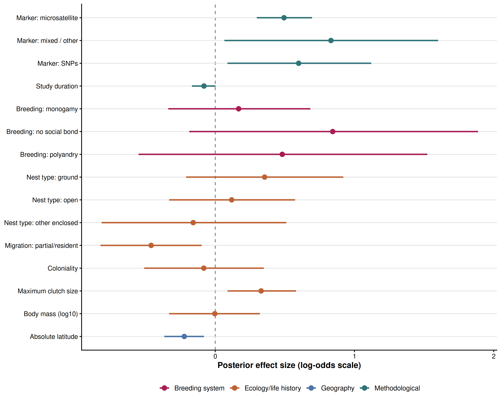
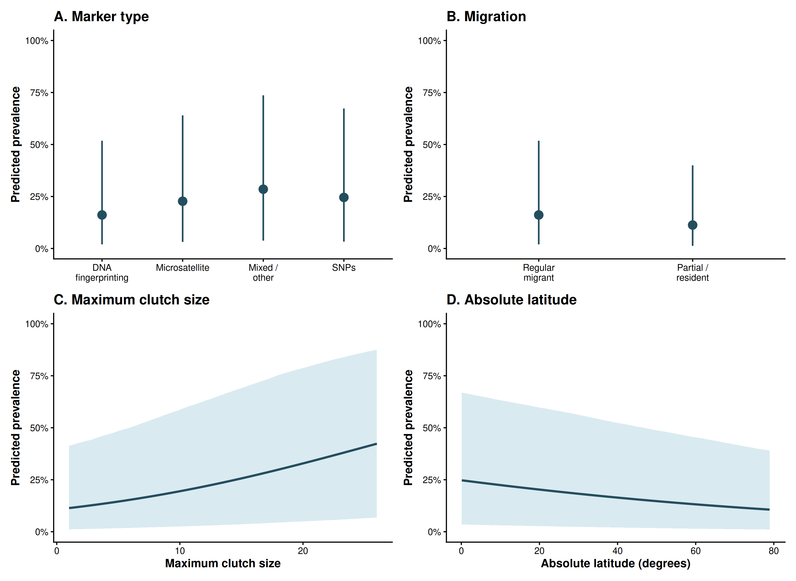
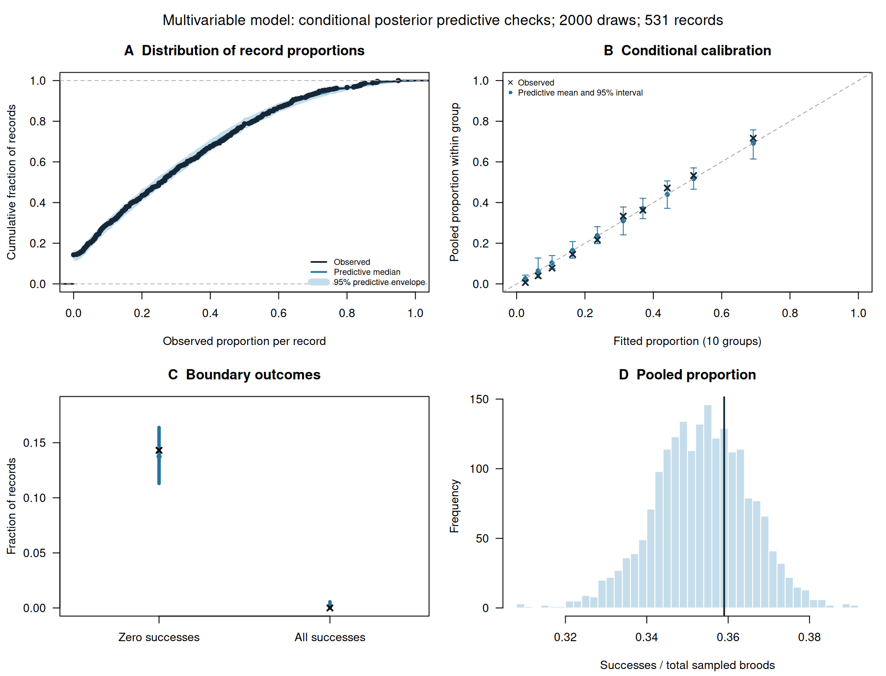

8 Multivariable model
All results on this page use the models after exclusion of the two records for the common ostrich (6/6) and Nelson’s sparrow (8/8), whose exact counts could not be verified as broods with at least two genetic sires. Other records were retained, including the saltmarsh-sparrow record from the same Walsh study. Updated 5 November 2026.
Estimates are posterior means with 95% equal-tailed credible intervals (CrI). Odds ratios are summarised after exponentiating each contrast draw. Prevalence predictions are summarised after inverse-logit transformation, with random effects set to zero. Continuous effects use the original common scaling constants, retained unchanged after exclusion. Mixed paternity refers to the source-derived brood-level measure described in Methods; source reporting sometimes used brood-level EPP without identifying sire number.
8.1 Multivariable model
531 records, 480 study identifiers and 324 species; 14903 mixed-paternity broods out of 41511 sampled broods.
| Coefficient | Mean log odds [95% CrI] | Mean OR [95% CrI] |
|---|---|---|
| Intercept | -1.956 [-3.906, 0.072] | 0.240 [0.020, 1.075] |
| marker type modelmicrosatellite | 0.494 [0.298, 0.695] | 1.647 [1.348, 2.004] |
| marker type modelmixed other | 0.831 [0.066, 1.601] | 2.478 [1.068, 4.957] |
| marker type modelSNPs | 0.599 [0.088, 1.120] | 1.884 [1.091, 3.066] |
| study duration sc | -0.081 [-0.167, 0.002] | 0.923 [0.846, 1.002] |
| breeding systemmonogamy | 0.168 [-0.337, 0.683] | 1.223 [0.714, 1.980] |
| breeding systemno social bond | 0.843 [-0.187, 1.887] | 2.676 [0.830, 6.601] |
| breeding systempolyandry | 0.481 [-0.551, 1.523] | 1.858 [0.576, 4.585] |
| nest type modelground | 0.354 [-0.210, 0.919] | 1.485 [0.811, 2.508] |
| nest type modelopen | 0.118 [-0.332, 0.573] | 1.155 [0.718, 1.774] |
| nest type modelother enclosed | -0.159 [-0.817, 0.511] | 0.903 [0.442, 1.667] |
| migrationWeak | -0.460 [-0.824, -0.098] | 0.642 [0.439, 0.907] |
| coloniality1 | -0.082 [-0.511, 0.349] | 0.943 [0.600, 1.418] |
| CS max sc | 0.330 [0.088, 0.580] | 1.401 [1.092, 1.787] |
| log body mass sc | -0.003 [-0.331, 0.320] | 1.011 [0.718, 1.378] |
| abs lat sc | -0.223 [-0.366, -0.081] | 0.803 [0.693, 0.922] |
8.1.1 Pairwise contrasts
Each contrast compares the first category with the second.
| Contrast | Mean log odds [95% CrI] | Mean OR [95% CrI] |
|---|---|---|
| microsatellite - mixed other | -0.337 [-1.096, 0.424] | 0.769 [0.334, 1.528] |
| microsatellite - SNPs | -0.105 [-0.594, 0.393] | 0.929 [0.552, 1.482] |
| mixed other - SNPs | 0.232 [-0.658, 1.119] | 1.398 [0.518, 3.063] |
| monogamy - no social bond | -0.676 [-1.597, 0.266] | 0.570 [0.203, 1.305] |
| monogamy - polyandry | -0.313 [-1.272, 0.644] | 0.823 [0.280, 1.904] |
| no social bond - polyandry | 0.362 [-0.916, 1.639] | 1.773 [0.400, 5.149] |
| ground - open | 0.236 [-0.268, 0.744] | 1.309 [0.765, 2.104] |
| ground - other enclosed | 0.513 [-0.161, 1.194] | 1.774 [0.852, 3.300] |
| open - other enclosed | 0.276 [-0.327, 0.880] | 1.383 [0.721, 2.412] |
8.1.2 Variance components and precision
| Quantity | Posterior mean [95% CrI] |
|---|---|
| Phylogenetic species variance | 3.120 [1.487, 5.377] |
| Non-phylogenetic species variance | 0.463 [0.138, 0.821] |
| Study variance | 0.091 [0.001, 0.232] |
| Beta-binomial precision | 28.208 [15.797, 55.265] |
| Species-level phylogenetic heritability | 0.856 [0.674, 0.972] |
| Prevalence at zero random effects (proportion) | 0.161 [0.020, 0.518] |
8.1.3 Sampling diagnostics
| Maximum R-hat | Minimum bulk ESS | Minimum tail ESS | Divergences | Treedepth hits |
|---|---|---|---|---|
| 1.0031 | 791 | 1586 | 0 | 0 |
Download posterior summary · Parameter-level diagnostics.

8.2 Response-scale predictions
Non-focal continuous predictors are set to zero on their common scales and categorical predictors to reference levels. These are conditional predictions for this reference profile, not averages across species.

8.3 Conditional posterior predictive checks

8.4 Collinearity
| Predictor | VIF | Lower 95% CI | Upper 95% CI |
|---|---|---|---|
| marker type model | 1.121 | 1.044 | 1.333 |
| study duration sc | 1.077 | 1.018 | 1.337 |
| breeding system | 1.328 | 1.199 | 1.539 |
| nest type model | 1.243 | 1.133 | 1.444 |
| migration | 1.257 | 1.143 | 1.459 |
| coloniality | 1.057 | 1.008 | 1.392 |
| CS max sc | 1.191 | 1.094 | 1.390 |
| log body mass sc | 1.085 | 1.022 | 1.330 |
| abs lat sc | 1.351 | 1.217 | 1.566 |
8.4.1 Continuous-predictor correlations
| Predictor | study duration sc | CS max sc | log body mass sc | abs lat sc |
|---|---|---|---|---|
| study duration sc | 1.000 | -0.049 | -0.046 | -0.008 |
| CS max sc | -0.049 | 1.000 | -0.225 | 0.271 |
| log body mass sc | -0.046 | -0.225 | 1.000 | 0.011 |
| abs lat sc | -0.008 | 0.271 | 0.011 | 1.000 |
8.4.2 Design matrix
| records | columns | rank | condition |
|---|---|---|---|
| 531 | 16 | 16 | 15.7990571020539 |